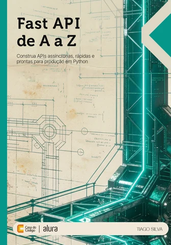
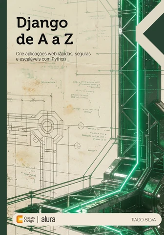
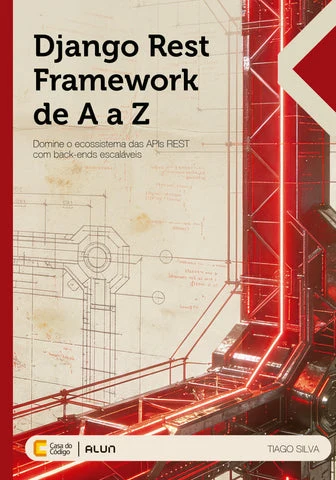

Fast API de A a Z
por Tiago Silva · Casa do Código
Construa APIs assíncronas, rápidas e prontas para produção em Python
Sobre este livro
Uma API assíncrona de loja virtual, do primeiro endpoint ao Docker
Neste livro, você aprenderá a criar APIs com o FastAPI, um dos frameworks mais modernos e mais usados do Python para esse fim.
O que diferencia o FastAPI de outros frameworks é que ele foi pensado desde o início para a programação assíncrona. Isso significa que sua aplicação consegue atender muitas requisições ao mesmo tempo, sem ficar parada esperando o banco de dados, outro serviço ou um e-mail responderem. Por isso, o assíncrono é o assunto central do livro e aparece em praticamente todos os capítulos.
O FastAPI é construído sobre duas bibliotecas muito conhecidas, o Starlette, que cuida da parte web, e o Pydantic, que cuida da validação dos dados. Ele também gera, de forma automática, a documentação interativa da sua API, a partir do próprio código que você escreve.
Ao longo dos capítulos, você constrói uma API completa para um sistema de pedidos de loja virtual, com cadastro de produtos, autenticação, perfis de acesso e um checkout que consulta vários serviços ao mesmo tempo.
Para quem é
Desenvolvedores que já conhecem a linguagem Python e desejam criar APIs rápidas e preparadas para o mercado.
Pré-requisitos
Conhecimento básico em Python, em criação de ambientes virtuais (virtualenvs) e em banco de dados relacionais. Não é necessário conhecer o FastAPI, o Pydantic ou programação assíncrona: o livro explica tudo desde o início.
O que você vai aprender
- Entender a programação assíncrona do Python e usá-la a seu favor
- Validar dados com o Pydantic e separar bem os schemas das models
- Trabalhar com o PostgreSQL, o SQLAlchemy e o Alembic de forma assíncrona
- Organizar o projeto em camadas e usar a injeção de dependências do FastAPI
- Proteger a API com JWT e perfis de acesso
- Receber webhooks, executar tarefas em segundo plano e enviar notificações em tempo real
- Melhorar o desempenho com cache e proteger a API contra excesso de requisições
- Testar, documentar, monitorar e colocar a aplicação para rodar com o Docker
Sumário
Toque em um capítulo para ver as seções.
1Configuração do Python
- Instalando o Python e suas dependências
- Escolhendo uma IDE
- Testando o ambiente para começar
2Programação assíncrona em Python
- O problema de esperar
- Concorrência, paralelismo e threads
- async e await
- O laço de eventos
- Rodando tarefas ao mesmo tempo com asyncio.gather
- Quando o assíncrono não ajuda
3Primeiros passos com FastAPI
- O que é o FastAPI e por que ele é assíncrono
- Instalando o FastAPI
- Estrutura do projeto
- Regras de negócio do sistema
- Configurações e variáveis de ambiente
- Nosso primeiro run
- A documentação automática
4Rotas e parâmetros
- Entendendo as rotas
- Nossa primeira rota
- Parâmetros de caminho
- Parâmetros de consulta
- Corpo da requisição
- Verbos HTTP
- Códigos de status
5Schemas com Pydantic
- O que são schemas
- Criando nossos primeiros schemas
- Tipos e restrições dos campos
- Validadores
- Schemas de entrada e de saída
- Schemas aninhados
6Models com SQLAlchemy
- O banco de dados PostgreSQL
- Conexão assíncrona com o banco
- Criando as models
- Relacionamentos
- Constraints e índices
- A sessão assíncrona
7Migrações com Alembic
- O que são migrações
- Instalando e configurando o Alembic
- Gerando a primeira migração
- Aplicando e revertendo migrações
- Boas práticas
8Models x Schemas
- Por que separar models e schemas
- Ligando um ao outro com from_attributes
- O response_model
- Schemas de criação, atualização e leitura
- Erros comuns
9APIRouter e arquitetura em camadas
- O APIRouter
- Organizando o projeto em módulos
- A camada de rotas
- A camada de serviços
- A camada de repositórios
- Rotas gordas e como evitá-las
10Injeção de dependências
- O que é injeção de dependências
- Nossa primeira dependência com Depends
- Dependências com yield: a sessão do banco
- Dependências em cadeia
- Dependências em um router inteiro
- Sobrescrevendo dependências
11CRUD completo
- Criando e listando
- Buscando por id
- Editando e removendo
- Paginação
- Filtros e busca
- Tratamento de erros
- Respostas padronizadas
12Autenticação JWT e perfis de acesso
- Como funciona a autenticação por token
- Guardando senhas com segurança
- O endpoint de login
- Protegendo rotas com OAuth2PasswordBearer
- Perfis de acesso: cliente, lojista e admin
- Renovando o token
13Checkout assíncrono
- O problema do checkout
- Chamando serviços externos com httpx
- Consultas em paralelo com asyncio.gather
- Timeouts e falhas parciais
- Transações e baixa de estoque
- Testando o checkout
14Webhooks e idempotência
- O que são webhooks
- Recebendo a confirmação de pagamento
- Validando a assinatura do webhook
- O que é idempotência
- Chave de idempotência
- Evitando processar duas vezes
15Tarefas em segundo plano
- BackgroundTasks
- Enviando e-mails sem travar a resposta
- Os limites das tarefas em segundo plano
- Uma fila assíncrona com Redis
16Tempo real com WebSocket e SSE
- Tempo real na web
- WebSocket no FastAPI
- Acompanhando o status do pedido
- Server-Sent Events
- Gerenciando conexões
- Segurança em conexões em tempo real
17Cache com Redis e limite de requisições
- Por que usar cache
- Redis assíncrono
- Cache do catálogo de produtos
- Invalidando o cache
- Limite de requisições
18Testes
- Por que testar
- pytest e httpx.AsyncClient
- O banco de dados de testes
- Testando rotas
- Testando a autenticação
- Testando código assíncrono
- Cobertura de testes
19Documentação com OpenAPI
- A documentação que já vem pronta
- Descrevendo as rotas
- Exemplos nos schemas
- Documentando os erros
- Agrupando com tags
- Personalizando o Swagger e o ReDoc
20Logs, monitoramento e teste de carga
- Logs
- Métricas com Prometheus
- Erros com Sentry
- Teste de carga com Locust
- Interpretando os resultados
21Docker e Docker Compose
- Preparando o projeto
- O Dockerfile
- O docker-compose com PostgreSQL e Redis
- Rodando as migrações no container
- Variáveis de ambiente e segredos
- Rodando em produção com Uvicorn
22Segurança e performance
- Segurança em APIs e o OWASP
- CORS
- Protegendo dados sensíveis
- O problema N+1
- Índices
- O pool de conexões
AApêndice A: cheat sheet
- Docker e Docker Compose
- FastAPI
- SQLAlchemy e Alembic
- Códigos de status HTTP
- pytest

